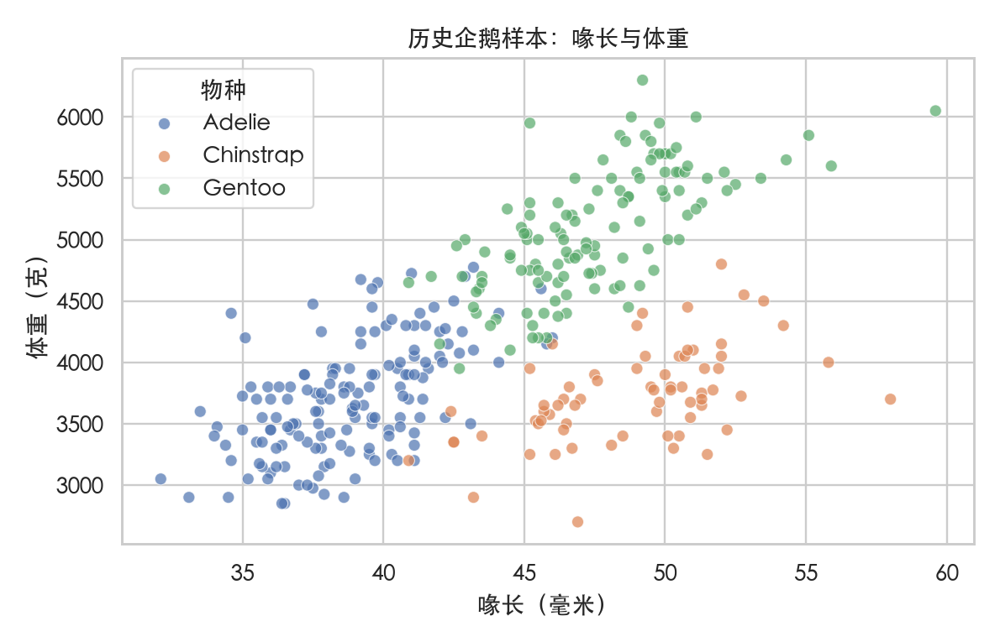

本课目标与数据说明
本课目标
- 从本地文件读取 tips 与 penguins，不调用在线下载接口。
- 说明直方图分箱、箱线图中位数和散点图每个点的意义。
- 用 seaborn 绘图，继续通过 Axes 修改标签。
- 识别缺失与离群，不机械删除，也不把相关当因果。
打开 4-2 练习本。seaborn 常缩写为 sns，它建立在 matplotlib 上，提供适合统计观察的图形接口。你不需要先学完统计学，但必须知道图在呈现什么。这里不是学习显著性检验，也不把历史样本推断成所有人或动物的规律。
import pandas as pd
import seaborn as sns
import matplotlib.pyplot as plt
from dacheck import setup_chinese_font
sns.set_theme(style="whitegrid")
setup_chinese_font()
tips = pd.read_csv("../data/public/tips.csv")
penguins = pd.read_csv("../data/public/penguins.csv")
print(tips.shape, penguins.shape)
print(penguins.isna().sum())先设主题再设中文字体，避免主题覆盖字体配置。tips 是历史餐厅消费与小费教学数据，total_bill 是美元账单，tip 是美元小费；它们不是本模拟店的收入，也不是人民币。penguins 是历史企鹅测量教学数据，bill_length_mm 为喙长毫米，body_mass_g 为体重克。
离线读取，不临时下载
tips.csv、penguins.csv 已随教程提供。不要使用 sns.load_dataset("tips")，那个接口可能需要访问网络或依赖本地缓存。读文件失败时检查路径与文件是否完整，不要为了跑通而换成来历不明的数据。
1. 直方图：一排数落入哪些区间
如果把每笔账单逐条列出来，你很难判断常见金额。直方图把连续数值分成区间，每根柱显示区间内有多少观察，这个区间就叫 bin（分箱）。
fig, ax = plt.subplots(figsize=(7, 4))
sns.histplot(data=tips, x="total_bill", bins=12, ax=ax, color="#2a788e")
ax.set(title="历史餐厅样本：账单金额分布",
xlabel="账单金额（美元）", ylabel="账单数（笔）")
fig.tight_layout()
plt.show()这里设置 12 个箱，纵轴默认是计数。不是“有 12 笔消费”，而是把所有账单划成 12 个金额区间。改变 bins 会改变细节：太少可能掩盖峰，太多会显得零碎。分箱不是数据造假，但选箱后要检查结论是否过于依赖一个参数。先保持计数，不同时开启密度曲线、归一化等新概念。
| 图形 | 横轴 | 一根柱/一个点代表什么 |
|---|---|---|
| 品类柱形图 | 文具、书籍等类别 | 某类别汇总金额 |
| 账单直方图 | 美元数值区间 | 该区间的账单数量 |
| 喙长与体重散点图 | 喙长毫米 | 一只企鹅的一对测量 |
如果纵轴写“概率”而实际画的是账单计数，图虽然能显示却已经误导。坐标文字必须与绘图参数一致。存在缺失时，图形库可能自动不画这些值；因此作图前检查有效观察数，不能因为图出现了就认为所有行都入图。
2. 箱线图：中间在哪里，分散到哪里
箱线图压缩了一个组的数值分布：箱内横线是中位数；箱子的上下边常对应第 25 与第 75 百分位；箱体宽度覆盖中间 50% 的数值。中位数可以理解为排序后处于中间的位置，通常不像平均数那样容易被极大值拉高。
fig, ax = plt.subplots(figsize=(7, 4))
sns.boxplot(data=tips, x="day", y="total_bill",
order=["Thur", "Fri", "Sat", "Sun"], ax=ax, color="#a9d6cf")
ax.set(title="历史餐厅样本：不同营业日账单分布",
xlabel="星期（Thur周四 / Fri周五 / Sat周六 / Sun周日）",
ylabel="账单金额（美元）")
fig.tight_layout()
plt.show()默认规则下，须通常延伸到 1.5 倍四分位距范围内的最远观察，须外的点显示为离群候选。它们不是必然的最大值和最小值，也不是“程序认证的坏数据”。一个大账单可能来自多人聚餐；是否应排除，需要看原记录和分析目的。
可以补充每个营业日的样本量与中位数，再描述差异：
day_summary = tips.groupby("day")["total_bill"].agg(["count", "median"])
print(day_summary)观察到某天中位数高，不等于这一天本身导致消费者多花钱。人数、用餐时段、餐厅采样方式等都可能不同。本课不做因果结论，不根据图形重叠程度直接宣布统计显著。
3. 散点图：把两个数作为一对看
一只企鹅同时有喙长和体重，这两个值必须来自同一行。不能分别排序两个列后再拼起来，那样会人为制造关联。为这一张图选出测量完整的行，同时记录没有入图的行。
required = ["bill_length_mm", "body_mass_g", "species"]
plot_data = penguins.dropna(subset=required).copy()
excluded = penguins.loc[penguins[required].isna().any(axis=1)].copy()
print("原记录：", len(penguins), "入图：", len(plot_data), "未入图：", len(excluded))
fig, ax = plt.subplots(figsize=(7, 4.5))
sns.scatterplot(data=plot_data, x="bill_length_mm", y="body_mass_g",
hue="species", ax=ax, alpha=0.7)
ax.set(title="历史企鹅样本：喙长与体重",
xlabel="喙长（毫米）", ylabel="体重（克）")
ax.legend(title="物种")
fig.tight_layout()
plt.show()这里的 dropna(subset=required) 只是建立本图所需完整测量的副本，并非把原始企鹅表中任何缺失都删掉。比如性别缺失不影响这张喙长—体重图，就不应因此排除。不同分析所需的字段可以不同。

hue="species" 按物种着色，便于发现组别。若只看所有点，组间差异可能影响整体关系；组内规律可能不同。alpha=0.7 表示一定透明度，重叠处更容易看出密集，不是把观察值权重改成 70%。
4. 图形证据能说到哪里
超出证据的结论
“喙变长会让企鹅变重。”一张散点图并没有随机干预，也没有控制物种、年龄等因素。
有边界的描述
“在本历史教学样本的完整测量中，喙长与体重的散点呈现一定关联；物种分组可见差异，不能仅凭图推断因果。”
相关不是因果不意味着图没用。图可以帮你提出下一步问题：是否分组后仍存在关系？是否由极少数点驱动？这些都是探索性发现，但不能跳成经营建议或生物机制证明。
5. 四个练习
练习 1：清楚的入图范围
计算企鹅散点图所需三列均完整的行数。是否还需要因为 sex 缺失而排除？
提示与答案
penguins.dropna(subset=["bill_length_mm", "body_mass_g", "species"]).shape[0]。这张图不用性别，所以不应只因性别缺失排除；要保留未入图说明。
练习 2：箱线图旁的数字
按 Thur、Fri、Sat、Sun 顺序给出账单中位数，保持一列 Series。
参考答案
tips.groupby("day")["total_bill"].median().reindex(["Thur", "Fri", "Sat", "Sun"])。不要把中位数写成平均数。可另行查看每组样本量，但本题只提交中位数。
练习 3：不分色的散点图
使用 plot_data 画喙长与体重散点，横轴“喙长（毫米）”，纵轴“体重（克）”，标题写“企鹅测量关系”。
参考答案
新建 fig, scatter_ax = plt.subplots()，用 sns.scatterplot(data=plot_data, x="bill_length_mm", y="body_mass_g", ax=scatter_ax)，再设置标签并 plt.show()。检查对照点坐标与单位，不检测像素颜色。
练习 4：改写结论
把“周末使客人更愿意消费”改成不夸大证据的一句话，并在 Notebook 回答相关与因果的关系。
参考答案
“这个历史餐厅样本中，不同营业日的账单分布有所不同；样本量、用餐人数等可能不同，相关不等于因果。”Notebook 提交“相关不等于因果”。
箱线图须外出现一个点，应该怎样处理？
离群是探索提示，不是无效数据证明；处理动作需要记录。
6. 常见问题与验收
| 遇到的问题 | 下一步 |
|---|---|
| 下载 tips 失败 | 改用本课的本地 CSV，不调用 load_dataset |
Could not interpret value ... |
查看列名，本课公开数据使用英文，不是中文订单字段 |
| 图中数量比原表少 | 检查绘图所需字段缺失，记录有效行数 |
| 中文在设主题后变方框 | sns.set_theme() 之后再运行字体设置 |
| 图例出现“species” | ax.legend(title="物种")，不改变数据编码 |
求职加分
探索性分析岗位需要能说清图的统计含义。展示分箱选择、样本覆盖率与离群复核，比把所有图套上彩色主题更重要。公开历史数据作品要写来源与样本限制，不把观察性差异包装成已验证的运营方案。
本课验收